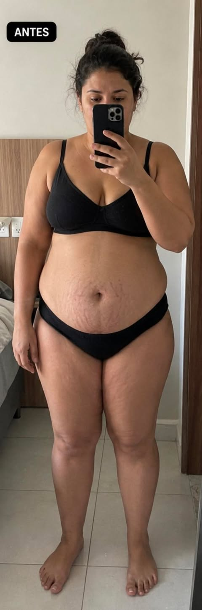
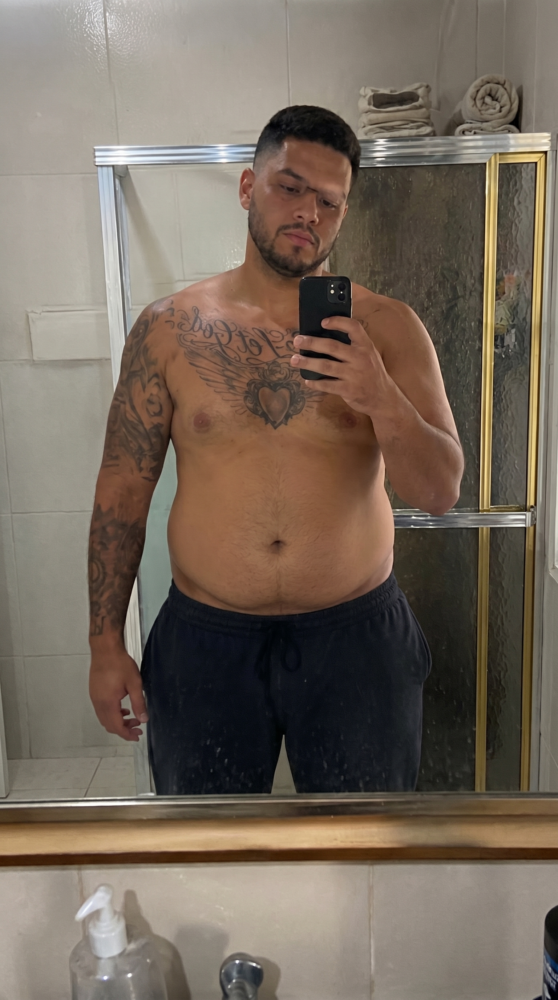

TRANSFORMAÇÕES REAIS
Resultados que falam por si
Veja pessoas reais que transformaram seus corpos usando o método Cetose Consciente.

Maria - 3 meses
Perdeu 15kg com o método

João - 4 meses
Perdeu 7kg com o método

Ana - 5 meses
Perdeu 18kg com o método